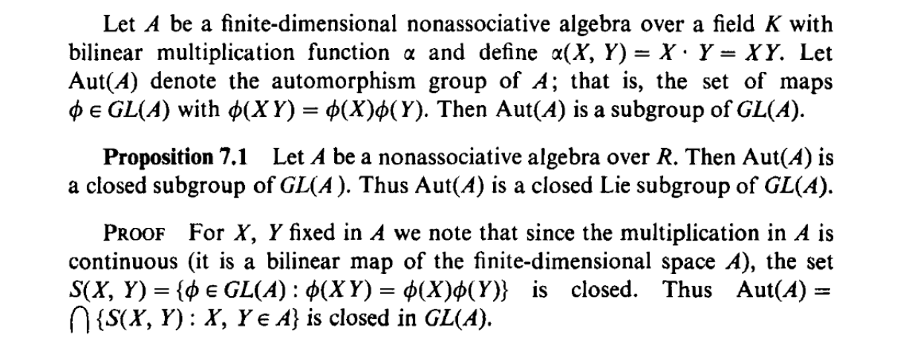
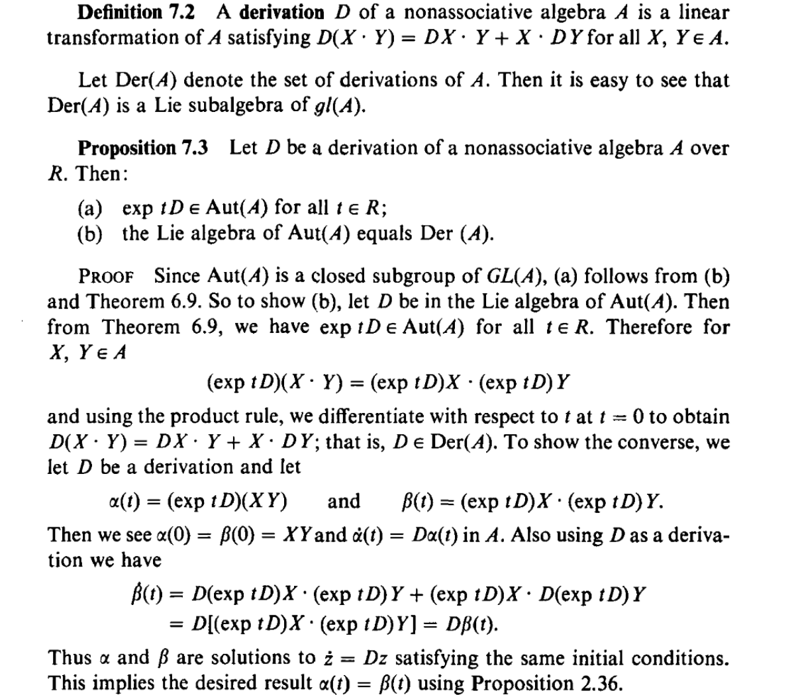
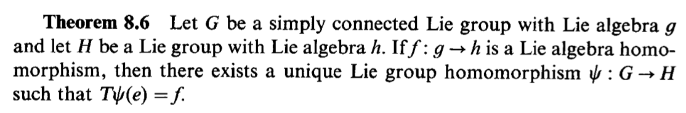
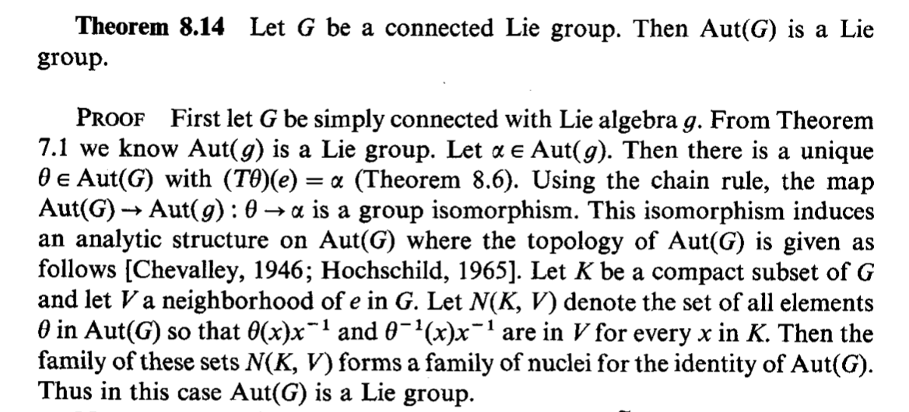
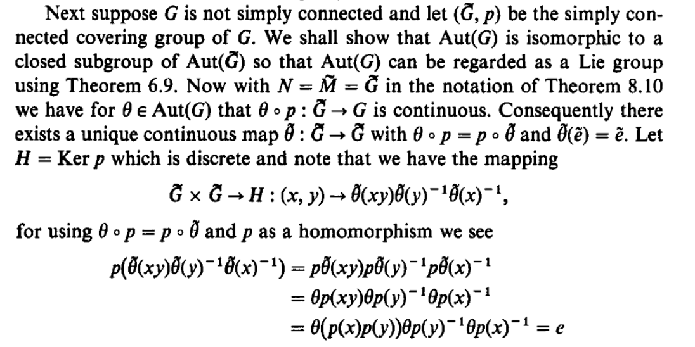
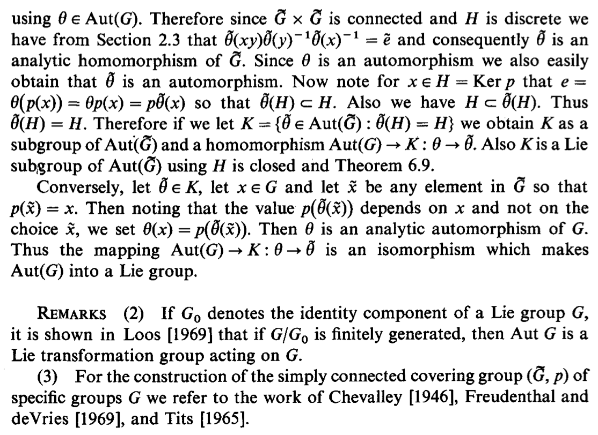

e n d ( g ) \mathfrak {end}(\mathfrak g) end ( g ) g \mathfrak g g e n d ( g ) ⊂ L ( g ) \mathfrak {end}(\mathfrak g)\subset L(\mathfrak g) end ( g ) ⊂ L ( g )
对于普通的、无李代数结构的线性空间 V V V V V V endomorphism 是V V V E n v ( V ) = L ( V ) Env(V)=L(V) E n v ( V ) = L ( V )
对于李代数 g \mathfrak g g e n d ( g ) ⊂ L ( g ) \mathfrak {end}(\mathfrak g)\subset L(\mathfrak g) end ( g ) ⊂ L ( g ) e n d ( g ) \mathfrak {end}(\mathfrak g) end ( g )
对于线性空间 V V V E n v ( V ) = L ( V ) = g l ( V ) Env(V)=L(V)=\mathfrak {gl}(V) E n v ( V ) = L ( V ) = gl ( V ) g → E n v ( V ) \mathfrak g\to Env(V) g → E n v ( V ) g \mathfrak g g V V V
Endomorphism Lie algebra https://ncatlab.org/nlab/show/endomorphism+Lie+algebra vector space V V V endomorphism Lie algebra e n d ( V ) \mathfrak{end}(V) end ( V ) Lie algebra whose elements are the linear maps ϕ : V → V \phi:V\rightarrow V ϕ : V → V commutator : [ ϕ 1 , ϕ 2 ] = ϕ 1 ∘ ϕ 2 − ϕ 2 ∘ ϕ 1 [\phi_1,\phi_2] = \phi_1\circ \phi_2 - \phi_2\circ \phi_1 [ ϕ 1 , ϕ 2 ] = ϕ 1 ∘ ϕ 2 − ϕ 2 ∘ ϕ 1 g → e n d ( V ) \mathfrak g\rightarrow \mathfrak{end}(V) g → end ( V ) Lie algebra representation of g \mathfrak g g V V V
A u t ( g ) Aut(\mathfrak g) A u t ( g ) g \mathfrak g g A u t ( g ) ⊂ G L ( g ) Aut(\mathfrak g)\subset GL(\mathfrak g) A u t ( g ) ⊂ G L ( g )
Automorphism of a Lie algebra https://en.wikipedia.org/wiki/Automorphism_of_a_Lie_algebra abstract algebra , an automorphism ** of a **Lie algebra g \mathfrak g g isomorphism from g \mathfrak g g preserving the Lie bracket . The set of automorphisms of g \mathfrak g g A u t ( g ) Aut(\mathfrak g) A u t ( g ) automorphism group of g \mathfrak g g
L ( g ) = g l ( g ) L(\mathfrak g)=\mathfrak {gl}(\mathfrak g) L ( g ) = gl ( g )
前面提到e n d ( g ) ⊂ L ( g ) \mathfrak {end}(\mathfrak g)\subset L(\mathfrak g) end ( g ) ⊂ L ( g ) e n d ( g ) \mathfrak {end}(\mathfrak g) end ( g ) L ( g ) L(\mathfrak g) L ( g ) e n d ( g ) \mathfrak {end}(\mathfrak g) end ( g )
设 α , β ∈ e n d ( g ) \alpha,\beta\in \mathfrak {end}(\mathfrak g) α , β ∈ end ( g ) X , Y ∈ g X,Y\in \mathfrak g X , Y ∈ g
α , β \alpha,\beta α , β g \mathfrak g g α [ X , Y ] = [ α X , α Y ] \alpha[X,Y]=[\alpha X,\alpha Y] α [ X , Y ] = [ α X , α Y ] β [ X , Y ] = [ β X , β Y ] \beta[X,Y]=[\beta X,\beta Y] β [ X , Y ] = [ βX , β Y ]
容易验证 α β \alpha\beta α β β α \beta\alpha β α α β − β α \alpha\beta-\beta\alpha α β − β α g \mathfrak g g
( α β − β α ) [ X , Y ] = [ ( α β − β α ) X , ( α β − β α ) Y ] (\alpha\beta-\beta\alpha)[X,Y]=[(\alpha\beta-\beta\alpha) X,(\alpha\beta-\beta\alpha) Y] ( α β − β α ) [ X , Y ] = [( α β − β α ) X , ( α β − β α ) Y ]
g \mathfrak g g δ \delta δ δ [ X , Y ] = [ δ X , Y ] + [ X , δ Y ] \delta[X,Y]=[\delta X, Y] + [X,\delta Y] δ [ X , Y ] = [ δ X , Y ] + [ X , δ Y ]
g \mathfrak g g D e r ( g ) Der(\mathfrak g) Der ( g ) L ( g ) L(\mathfrak g) L ( g )
下面对 commuator 在 D e r ( g ) Der(\mathfrak g) Der ( g )
δ 1 δ 2 [ X , Y ] = δ 1 ( [ δ 2 X , Y ] + [ X , δ 2 Y ] ) = δ 1 [ δ 2 X , Y ] + δ 1 [ X , δ 2 Y ] = ( [ δ 1 δ 2 X , Y ] + [ δ 2 X , δ 1 Y ] ) + ( [ δ 1 X , δ 2 Y ] + [ X , δ 1 δ 2 Y ] ) = ( [ δ 1 δ 2 X , Y ] + [ X , δ 1 δ 2 Y ] ) + ( [ δ 2 X , δ 1 Y ] + [ δ 1 X , δ 2 Y ] ) ⏟ A \begin{aligned} \delta_1\delta_2[X,Y]&=\delta_1([\delta_2 X, Y] + [X,\delta_2 Y])\\
&=\delta_1[\delta_2 X, Y] + \delta_1[X,\delta_2 Y]\\
&=([\delta_1\delta_2 X, Y] + [\delta_2 X, \delta_1Y]) + ([\delta_1X,\delta_2 Y]+[X,\delta_1\delta_2 Y])\\
&=([\delta_1\delta_2 X, Y]+[X,\delta_1\delta_2 Y]) + \underbrace{([\delta_2 X, \delta_1Y] + [\delta_1X,\delta_2 Y])}_{A}\\
\end{aligned} δ 1 δ 2 [ X , Y ] = δ 1 ([ δ 2 X , Y ] + [ X , δ 2 Y ]) = δ 1 [ δ 2 X , Y ] + δ 1 [ X , δ 2 Y ] = ([ δ 1 δ 2 X , Y ] + [ δ 2 X , δ 1 Y ]) + ([ δ 1 X , δ 2 Y ] + [ X , δ 1 δ 2 Y ]) = ([ δ 1 δ 2 X , Y ] + [ X , δ 1 δ 2 Y ]) + A ([ δ 2 X , δ 1 Y ] + [ δ 1 X , δ 2 Y ])
类似地
δ 2 δ 1 [ X , Y ] = ( [ δ 2 δ 1 X , Y ] + [ X , δ 2 δ 1 Y ] ) + A \begin{aligned} \delta_2\delta_1[X,Y]&=([\delta_2\delta_1 X, Y]+[X,\delta_2\delta_1 Y]) + A
\end{aligned} δ 2 δ 1 [ X , Y ] = ([ δ 2 δ 1 X , Y ] + [ X , δ 2 δ 1 Y ]) + A
因此
( δ 1 δ 2 − δ 2 δ 1 ) [ X , Y ] = [ ( δ 1 δ 2 − δ 2 δ 1 ) X , Y ] + [ X , ( δ 1 δ 2 − δ 2 δ 1 ) Y ] \begin{aligned} (\delta_1\delta_2-\delta_2\delta_1)[X,Y]&=[(\delta_1\delta_2-\delta_2\delta_1)X,Y]+[X,(\delta_1\delta_2-\delta_2\delta_1)Y]
\end{aligned} ( δ 1 δ 2 − δ 2 δ 1 ) [ X , Y ] = [( δ 1 δ 2 − δ 2 δ 1 ) X , Y ] + [ X , ( δ 1 δ 2 − δ 2 δ 1 ) Y ]
其中两个A A A
Derivation on Lie algebrahttps://en.wikipedia.org/wiki/Automorphism_of_a_Lie_algebra#Derivations derivation on a Lie algebra is a linear map δ : g → g \delta: \mathfrak g\to \mathfrak g δ : g → g Leibniz rule : δ [ X , Y ] = [ δ X , Y ] + [ X , δ Y ] \delta [X,Y]=[\delta X,Y] + [X,\delta Y] δ [ X , Y ] = [ δ X , Y ] + [ X , δ Y ] g \mathfrak g g d e r ( g ) der (\mathfrak g) d er ( g ) endomorphisms on g \mathfrak g g d e r ( g ) < E n d ( g ) der(\mathfrak g)\lt End(\mathfrak g) d er ( g ) < E n d ( g )
A u t ( g ) Aut(\mathfrak g) A u t ( g ) G L ( g ) GL(\mathfrak g) G L ( g )
（下图所在文献的 Preview 链接 ）

A u t ( g ) Aut(\mathfrak g) A u t ( g ) D e r ( g ) Der(\mathfrak g) Der ( g )
一个简单的证明：https://math.stackexchange.com/a/3823227

其他参考：g \mathfrak g g https://ncatlab.org/nlab/show/derivation+Lie+algebra g \mathfrak g g Lie algebra , then the Lie algebra of its automorphism Lie group a u t ( g ) e v e n \mathfrak{aut}(\mathfrak g)_{even} aut ( g ) e v e n automorphism Lie algebra of g \mathfrak g g d e r ( g ) \mathfrak {der}(\mathfrak g) der ( g ) Δ : g → g \Delta: \mathfrak g\rightarrow \mathfrak g Δ : g → g derivation property:Δ ( [ x , y ] ) = [ Δ ( x ) , y ] + [ x , Δ ( y ) ] \Delta([x,y])=[\Delta(x),y] + [x, \Delta(y)] Δ ([ x , y ]) = [ Δ ( x ) , y ] + [ x , Δ ( y )] x , y ∈ g x,y\in\mathfrak g x , y ∈ g a u t ( g ) e v e n \mathfrak{aut}(\mathfrak g)_{even} aut ( g ) e v e n d e r ( g ) \mathfrak {der}(\mathfrak g) der ( g ) commutator operation:[ Δ 1 , Δ 2 ] : = Δ 1 ∘ Δ 2 − Δ 2 ∘ Δ 1 [\Delta_1,\Delta_2] := \Delta_1\circ \Delta_2 - \Delta_2\circ \Delta_1 [ Δ 1 , Δ 2 ] := Δ 1 ∘ Δ 2 − Δ 2 ∘ Δ 1
考虑李群 G G G A u t ( G ) Aut(G) A u t ( G )
注意，它与G G G g \mathfrak g g A u g ( g ) Aug(\mathfrak g) A ug ( g )
若 ϕ ∈ A u t ( G ) \phi\in Aut(G) ϕ ∈ A u t ( G ) G G G ϕ \phi ϕ e G e_G e G ϕ ˙ : = T e G ϕ \dot\phi:=T_{e_G}\phi ϕ ˙ := T e G ϕ g \mathfrak g g ϕ ˙ ∈ A u t ( g ) \dot \phi\in Aut(\mathfrak g) ϕ ˙ ∈ A u t ( g )
如果 ϕ ↦ ϕ ˙ \phi\mapsto \dot\phi ϕ ↦ ϕ ˙ A u t ( G ) Aut(G) A u t ( G ) A u t ( g ) Aut(\mathfrak g) A u t ( g ) ϕ ↦ ϕ ˙ \phi\mapsto \dot\phi ϕ ↦ ϕ ˙
对于不连通的李群G G G ϕ ↦ ϕ ˙ \phi\mapsto \dot\phi ϕ ↦ ϕ ˙ ϕ ≠ I d G \phi\ne Id_G ϕ = I d G G 0 G_0 G 0 G 0 G_0 G 0 f f f F F F H H H G = H × F G=H\times F G = H × F G 0 = H G_0=H G 0 = H G G G I d H × f Id_H\times f I d H × f ϕ \phi ϕ G 0 G_0 G 0 ϕ ˙ = I d G ˙ \dot \phi=\dot {Id_G} ϕ ˙ = I d G ˙ ϕ ≠ A d G \phi\ne Ad_G ϕ = A d G
当G G G A u t ( G ) Aut(G) A u t ( G ) https://math.stackexchange.com/a/1589323
所以后面主要考虑G G G G 0 G_0 G 0 G 0 G_0 G 0 这个问题 ）。
如果G G G ϕ ˙ \dot\phi ϕ ˙ ϕ \phi ϕ ϕ ↦ ϕ ˙ \phi\mapsto \dot\phi ϕ ↦ ϕ ˙ A u t ( G ) Aut(G) A u t ( G ) A u t ( g ) Aut(\mathfrak g) A u t ( g )
下图证明了G G G ϕ \phi ϕ ϕ ˙ \dot\phi ϕ ˙
我们已经知道当G G G A u t ( G ) ⊂ A u t ( g ) Aut(G)\subset Aut(\mathfrak g) A u t ( G ) ⊂ A u t ( g ) A u t ( G ) Aut(G) A u t ( G )
A u t ( G ) Aut(G) A u t ( G )
先放些结论，后面再对关键问题做些解释：
如果 G G G A u t ( G ) Aut(G) A u t ( G ) A u t ( g ) Aut(\mathfrak g) A u t ( g ) A u t ( g ) Aut(\mathfrak g) A u t ( g ) G G G A u t ( G ) ≅ A u g ( g ) Aut(G)\cong Aug(\mathfrak g) A u t ( G ) ≅ A ug ( g )
如果A u t ( G ) Aut(G) A u t ( G ) A u t ( g ) Aut(\mathfrak g) A u t ( g ) A u t ( G ) Aut(G) A u t ( G ) D e r ( g ) Der(\mathfrak g) Der ( g ) A u t ( G ) Aut(G) A u t ( G ) A u t ( g ) Aut(\mathfrak g) A u t ( g ) D e r ( g ) Der(\mathfrak g) Der ( g )
关于A u t ( G ) Aut(G) A u t ( G ) A u t ( G ) Aut(G) A u t ( G ) A u t ( g ) Aut(\mathfrak g) A u t ( g ) A u t ( g ) Aut(\mathfrak g) A u t ( g ) https://math.stackexchange.com/questions/1903929/how-is-the-automorphism-group-of-a-lie-group-given-a-differential-structure
其他相关链接：automorphism Lie group and derivation Lie algebra : https://ncatlab.org/nlab/show/automorphism+Lie+group automorphism group A u t ( G ) Aut(G) A u t ( G ) Lie group G G G Lie algebra is the derivation Lie algebra of the Lie algebra g \mathfrak g g G G G L i e ( A u t ( G ) ) ≅ d e r ( g ) Lie(Aut(G)) \cong \mathfrak {der}(\mathfrak g) L i e ( A u t ( G )) ≅ der ( g )
本节将说明当G G G A u t ( G ) ≅ A u g ( g ) Aut(G)\cong Aug(\mathfrak g) A u t ( G ) ≅ A ug ( g )
前面已经提到 ϕ ↦ ϕ ˙ \phi\mapsto \dot\phi ϕ ↦ ϕ ˙ f : g → g f:\mathfrak g\to \mathfrak g f : g → g
大致思路是，每个李代数自同构都对应李群单位元附近邻域 U U U ϕ \phi ϕ ψ \psi ψ
首先，沿着一条 e → g e\to g e → g ψ \psi ψ U U U g g g g g g ψ ( g ) \psi(g) ψ ( g )
而由于 G G G e → g e\to g e → g ψ ( g ) \psi(g) ψ ( g ) ψ \psi ψ
详见 ^1：


单连通是 A u t ( G ) ≅ A u g ( g ) Aut(G)\cong Aug(\mathfrak g) A u t ( G ) ≅ A ug ( g ) S O ( 3 ) SO(3) SO ( 3 ) A u t ( G ) ≅ A u g ( g ) Aut(G)\cong Aug(\mathfrak g) A u t ( G ) ≅ A ug ( g ) e → g e\to g e → g g g g ψ ( g ) \psi(g) ψ ( g ) A u t ( G ) ≅ A u g ( g ) Aut(G)\cong Aug(\mathfrak g) A u t ( G ) ≅ A ug ( g )
而如果G G G A u t ( G ) Aut(G) A u t ( G ) A u t ( g ) Aut(\mathfrak g) A u t ( g ) A u t ( G ) Aut(G) A u t ( G ) A u t ( g ) Aut(\mathfrak g) A u t ( g )
首先，取多连通李群 G G G G ~ \tilde G G ~ g \mathfrak g g G ~ \tilde G G ~ A u t ( G ~ ) ≅ A u t ( g ) Aut(\tilde G)\cong Aut(\mathfrak g) A u t ( G ~ ) ≅ A u t ( g )
然后需要证明 A u t ( G ) Aut(G) A u t ( G ) A u t ( G ~ ) Aut(\tilde G) A u t ( G ~ ) A u t ( G ~ ) Aut(\tilde G) A u t ( G ~ ) A u t ( G ) Aut(G) A u t ( G ) A u t ( G ) Aut(G) A u t ( G ) A u t ( G ~ ) Aut(\tilde G) A u t ( G ~ )
用 p p p G ~ \tilde G G ~ G G G H H H p p p G ~ \tilde G G ~ G G G e e e
G G G θ \theta θ G ~ \tilde G G ~ θ ~ \tilde \theta θ ~ θ ∘ p = p ∘ θ ~ \theta\circ p=p\circ \tilde\theta θ ∘ p = p ∘ θ ~ θ ~ ( e ~ ) = e ~ \tilde\theta(\tilde e)=\tilde e θ ~ ( e ~ ) = e ~ p p p 然后证明 θ ~ \tilde\theta θ ~ G ~ \tilde G G ~
构造另一个映射 C ( θ ~ ) : G ~ × G ~ → H , ( x , y ) ↦ θ ~ ( x y ) θ ~ ( y ) − 1 θ ~ ( x ) − 1 C(\tilde \theta): \tilde G\times \tilde G\to H, (x,y)\mapsto \tilde\theta(xy)\tilde\theta(y)^{-1}\tilde\theta(x)^{-1} C ( θ ~ ) : G ~ × G ~ → H , ( x , y ) ↦ θ ~ ( x y ) θ ~ ( y ) − 1 θ ~ ( x ) − 1 C ( θ ~ ) ( ∗ , ∗ ) C(\tilde\theta)(*,*) C ( θ ~ ) ( ∗ , ∗ ) G ~ × G ~ \tilde G\times \tilde G G ~ × G ~ ( x , y ) (x,y) ( x , y ) H H H p p p C ( θ ~ ) ( x , y ) C(\tilde \theta)(x,y) C ( θ ~ ) ( x , y ) G G G e e e
从C ( θ ~ ) ( ∗ , ∗ ) C(\tilde\theta)(*,*) C ( θ ~ ) ( ∗ , ∗ ) ( x , y ) (x,y) ( x , y ) C ( θ ~ ) ( ∗ , ∗ ) C(\tilde\theta)(*,*) C ( θ ~ ) ( ∗ , ∗ ) ( x , y ) (x,y) ( x , y ) H H H e ~ = C ( θ ~ ) ( e ~ , e ~ ) \tilde e=C(\tilde\theta)(\tilde e,\tilde e) e ~ = C ( θ ~ ) ( e ~ , e ~ ) C ( θ ~ ) ( ∗ , ∗ ) C(\tilde\theta)(*,*) C ( θ ~ ) ( ∗ , ∗ ) θ ~ \tilde \theta θ ~ C ( θ ~ ) ( x , y ) = e ~ C(\tilde\theta)(x,y)=\tilde e C ( θ ~ ) ( x , y ) = e ~ θ ~ ( x y ) = θ ~ ( x ) θ ~ ( y ) \tilde\theta(xy)=\tilde\theta(x)\tilde\theta(y) θ ~ ( x y ) = θ ~ ( x ) θ ~ ( y ) θ ~ \tilde\theta θ ~ θ \theta θ θ ~ \tilde\theta θ ~


H = K e r p H=Ker\ p H = Ker p θ ( p ( H ) ) = e = p θ ~ ( H ) \theta(p(H))=e=p\tilde\theta(H) θ ( p ( H )) = e = p θ ~ ( H ) θ ~ ( H ) ⊂ H \tilde \theta(H)\subset H θ ~ ( H ) ⊂ H θ ~ \tilde\theta θ ~ θ ~ ( H ) = H \tilde \theta(H)= H θ ~ ( H ) = H G ~ \tilde G G ~ θ ~ ( H ) = H \tilde\theta(H)=H θ ~ ( H ) = H K K K K K K H i : A u t ( G ~ ) → G ~ , θ ~ ↦ θ ~ ( h i ∈ H ) \mathcal H_i: Aut(\tilde G)\rightarrow \tilde G,\quad \tilde\theta\mapsto \tilde\theta(h_i\in H) H i : A u t ( G ~ ) → G ~ , θ ~ ↦ θ ~ ( h i ∈ H ) H H H H i \mathcal H_i H i h i ∈ H h_i\in H h i ∈ H H i \mathcal H_i H i K K K K K K K K K A u t ( G ) Aut(G) A u t ( G ) A u t ( G ) Aut(G) A u t ( G ) A u t ( G ~ ) Aut(\tilde G) A u t ( G ~ )
令G = S 1 G=S^1 G = S 1 S 1 S^1 S 1 C \mathbb C C C \mathbb C C R \mathbb R R S 1 S^1 S 1 R \mathbb R R S 1 S^1 S 1
G G G g = R \mathfrak g = \mathbb R g = R
g \mathfrak g g g \mathfrak g g e n d ( g ) = R \mathfrak{end}(\mathfrak g) = \mathbb R end ( g ) = R D e r ( g ) = R Der(\mathfrak g)=\mathbb R Der ( g ) = R 非 0 线性算子都是自同构， A u t ( g ) ≡ R − { 0 } Aut(\mathfrak g)\equiv \mathbb R-\{0\} A u t ( g ) ≡ R − { 0 } G = S 1 G=S^1 G = S 1 只包含恒等映射和取共轭 两个元素，A u t ( G ) = Z / 2 Aut(G)=\mathbb Z/2 A u t ( G ) = Z /2 A u t ( g ) Aut(\mathfrak g) A u t ( g ) A u t ( G ) ⫋ A u t ( g ) Aut(G)\subsetneqq Aut(\mathfrak g) A u t ( G ) ⫋ A u t ( g )
阿贝尔李群的 inner automorphism 都是恒等映射：c o n j g ( h ) = g h g − 1 = g g − 1 h = h conj_g(h)=ghg^{-1}=gg^{-1}h=h co n j g ( h ) = g h g − 1 = g g − 1 h = h S 1 S^1 S 1 outer automorphism 则只包含取共轭）。A u t ( G ) Aut(G) A u t ( G ) L i e ( A u t ( G ) ) Lie(Aut(G)) L i e ( A u t ( G )) L i e ( A u t ( g ) ) Lie(Aut(\mathfrak g)) L i e ( A u t ( g ))
Introduction to Lie groups and Lie algebras , Edited by Arthur A. Sagle, Ralph E. Walde Volume 51, 1973, pdf Natrual Operations in Differential Geomety , Ivan Kolář , Peter W. Michor, Jan Slovák , 1993